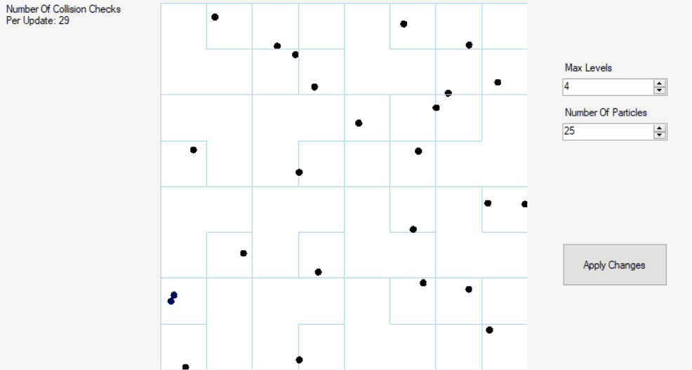
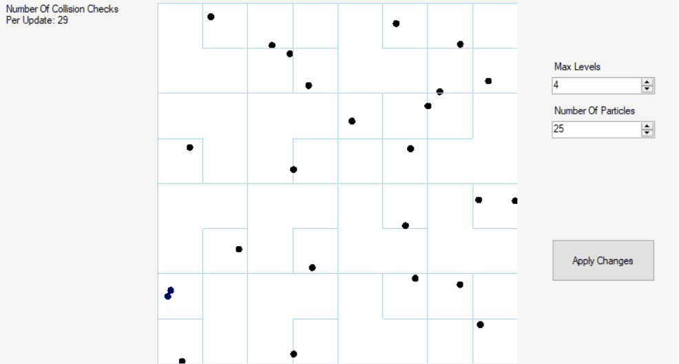

With this gif

inside here we see

magic can happen

where am I
The overarching idea of this project was to develop a teachable physics based curriculum towards students interested in game design. The development of a simple physics engine involves incorporating physical concepts into a computer program that then responds based on either user input, external interactions with other objects, or both. After initially explaining concepts such as matrices, vectors, and linear transformations, it builds in to primitive hitbox and polygon creation and detection.
With this gif
inside here we see
magic can happen

where am I